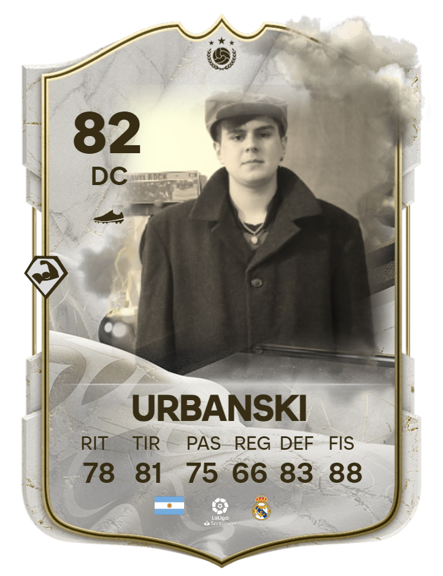

PUNTEROS
CUERNO DE ORO RANK
IGNACIO
RUIZ
.png)
2 Ignacio Pallanza
3 J. Di Massimo
4 Mateo Manaut
5 Tomás Barceló
MÁXIMOS GANADORES
GASTÓN
FERRARIS
.png)
2 Bruno Soldini
3 Joaquín Giordani
4 Benjamín Soldini
5 Ian Urbanski
MÁXIMOS GOLEADORES
BRUNO
SOLDINI
.png)
2 Franco Fantoni
3 Tomás Barceló
4 Gastón Ferraris
5 Jordan Monzón
MÁXIMAS VALLAS IMB.
IGNACIO
PALLANZA

2 Benjamín Soldini
3 Ignacio Ruiz
4 Mateo Manaut
5 Santino Jaime
CUERNO DE ORO RANKINGS
| RANK | NOMBRE | PUNTOS | RÉCORD |
| IGNACIO RUIZ |
32 | 8-2-4 | |
| 2 | IGNACIO PALLANZA |
29 | 8-3-2 |
| 3 | JERONIMO DI MASSIMO |
29 | 8-3-2 |
| 4 | .png) MATEO MANAUT MATEO MANAUT |
26 | 6-4-4 |
| 5 | .png) TOMÁS BARCELÓ TOMÁS BARCELÓ |
25 | 6-2-4 |
Los puntos que sumes con tus equipos durante las tres ediciones de calor de pamplona se te sumarán individualmente en la tabla por
el "Cuerno de Oro". Mantén un buen desempeño en la temporada y gana el
mayor prestigio de la "Copa de Toros".
Victoria en fase de grupos +3 | Empate en fase de grupos +1 | Victoria en Semis +4 | Victoria en Final +6 | 5 goles en una edición +1
| 3 vallas imbatidas en una edición +1 |
Los últimos dos en la tabla serán penalizados.
MÁXIMOS GANADORES
| RANK | NOMBRE | PARTICIP | CAMPEONATOS |
| 1 | GASTÓN FERRARIS |
5 | 2 |
| 2 | .png) JOAQUÍN GIORDANI JOAQUÍN GIORDANI |
6 | 2 |
| 3 | BRUNO SOLDINI |
5 | 2 |
| 4 | BENJAMÍN SOLDINI |
4 | 2 |
| 5 |  IAN URBANSKI | 6 | 2 |
MÁXIMOS GOLEADORES
| RANK | NOMBRE | PARTIDOS JUGADOS | GOLES |
| 1 | BRUNO SOLDINI |
25 | 21 |
| 2 | .png) FRANCO FANTONI FRANCO FANTONI |
30 | 19 |
| 3 | TOMÁS BARCELÓ |
22 | 18 |
| 4 | GASTÓN FERRARIS |
28 | 16 |
| 5 | .png) JORDAN MONZÓN JORDAN MONZÓN |
24 | 13 |
MÁXIMAS VALLAS IMBATIDAS
| RANK | NOMBRE | PARTIDOS JUGADOS | VALLAS IMBATIDAS |
| 1 | IGNACIO PALLANZA |
30 | 15 |
| 2 | BENJAMÍN SOLDINI |
20 | 15 |
| 3 | IGNACIO RUIZ |
22 | 12 |
| 4 | MATEO MANAUT |
28 | 12 |
| 5 | .png) SANTINO JAIME SANTINO JAIME |
25 | 9 |